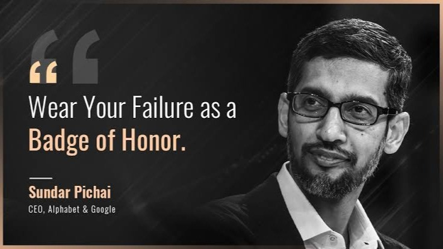
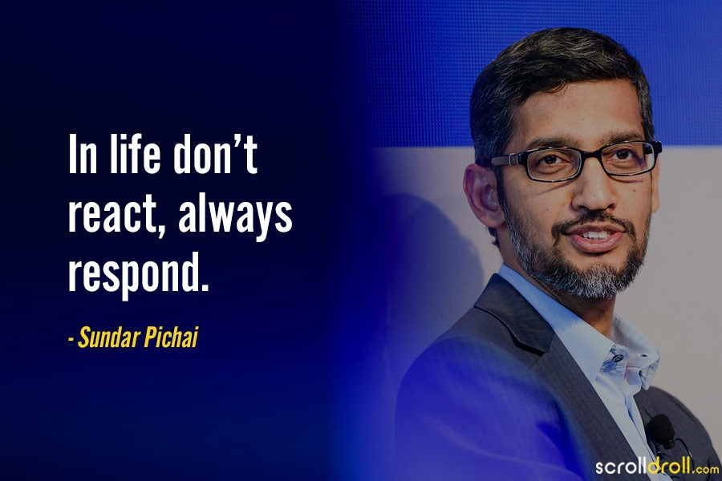
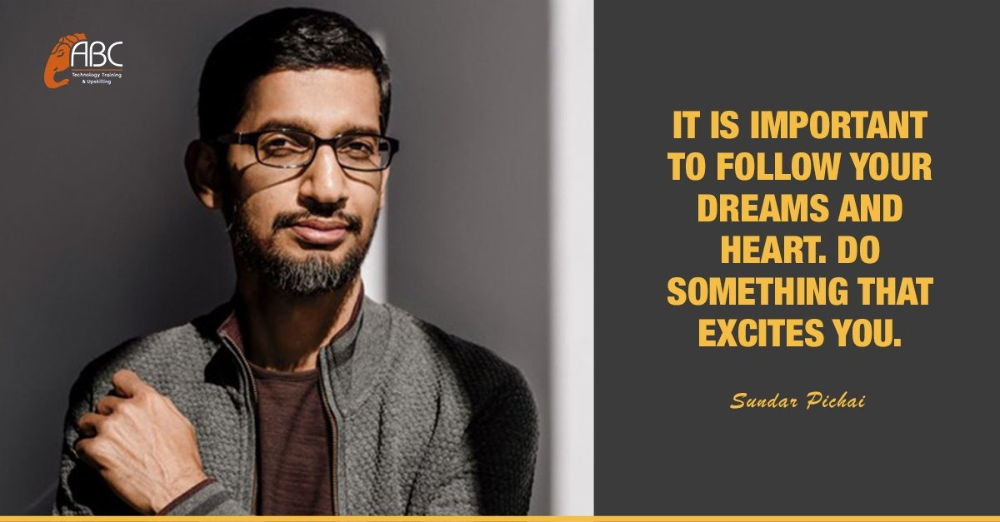
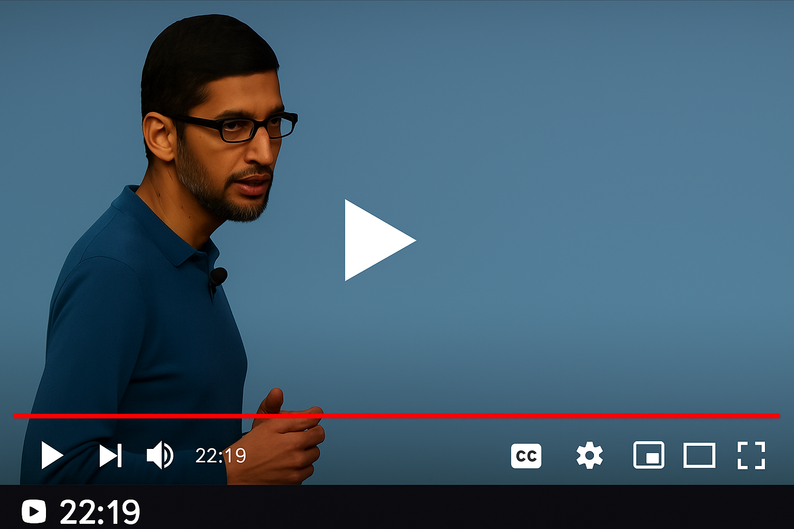

TRIBUTE TO SUNDAR PICHAI
A visionary leader shaping the digital world
INTRODUCTION
From a humble beginning in Tamil Nadu to becoming the global face of innovation, his journey is nothing short of legendary.
Sundar Pichai, the force behind two of the world’s biggest tech names - Google and its parent company Alphabet Inc.- is not just a CEO; he’s the mastermind behind technologies that billions rely on every single day.
But who is he really?
He is more than a tech leader. He’s a symbol of hope for young dreamers,
a reminder that where you start doesn't define where you’ll go.
His calm leadership, sharp intellect, and grounded nature make him
stand out in a world full of noise.
Sundar Pichai has shown us that true success lies in staying rooted while reaching for the sky.
An inspiration to countless future minds, he proves that big dreams backed by quiet determination can change the world.
EARLY LIFE AND EDUCATION
Born on July 12, 1972, in the vibrant city of Madurai, Tamil Nadu, Sundar Pichai’s story began in a modest home, where luxury was rare but values were rich.
His father, an electrical engineer, and his mother,
a dedicated stenographer, raised him with a strong foundation of discipline, curiosity, and humility.
From an early age, Sundar showed a remarkable ability to think differently. Growing up in Chennai, he attended Padma Seshadri Bala Bhavan, where his sharp memory and calm confidence stood out.
He didn’t
just learn — he absorbed.
In fact, it’s said he could remember almost every phone number he dialed!
His brilliance earned him a spot at the prestigious Indian Institute of Technology (IIT) Kharagpur, where he pursued Metallurgical Engineering.
But his dreams stretched far beyond. With a scholarship in hand, he flew to
the U.S. and completed his Master’s in Materials Science and Engineering at Stanford University — right at the heart of Silicon Valley.
Still hungry for growth, he went on to earn an MBA from the Wharton School, University of Pennsylvania, where he was named a Siebel Scholar and Palmer Scholar,
two of the highest honors for business students.
From the classrooms of Chennai to the corridors of Stanford and Wharton, Sundar Pichai’s
educational journey shaped not just a career — but a legacy in the making.
CAREER HIGHLIGHTS
Began his career at Applied Materials and later worked at McKinsey & Company
Joined Google in 2004 as a product manager
Initially worked on the Google Toolbar
Proposed and led the launch of Google Chrome, which became a global success
Rose through the ranks due to his calm leadership and product vision
Took charge of major products like Gmail, Google Drive, and Android
Became the CEO of Google in 2015 after Google's corporate restructuring
Appointed as the CEO of Alphabet Inc. in 2019, Google's parent company
Recognized today as one of the most influential tech leaders globally
ACHIEVEMENTS
Featured in Time’s 100 Most Influential People in 2016 and 2020.
Awarded the Padma bhushan in 2022.
Received an Honorary Doctorate from IIT Kharagpur in 2023.
Recognized globally for his visionary leadership and innovation.
Known for promoting digital education and inclusion, especially in India.
Respexted for his humble,simple,and effective leadership style.
INSPIRING QUOTES



IMAGE GALLERY


From Humble Beginnings to Global Leadership
EMBEDDED VEDIO

Sundar Pichai's BEST Speeches Of All Time
TIMELINE
1972: Born on June 10 in Chennai, India
1990s: Studied Metallurgical Engineering at IIT Kharagpur.
Late 1990s: Completed Master’s in Material Sciences at Stanford University.
Early 2000s: Earned MBA from Wharton School, University of Pennsylvania.
Early 2000s: Worked as management consultant at McKinsey & Company.
2004: Joined Google.
2008: Led development and launch of Google Chrome browser.
2010: Oversaw launch of Chrome OS and Chromebook devices.
2015: Became Product Chief at Google during Alphabet’s creation.
2019: Appointed CEO of Alphabet Inc. and Google.
2016: Named in Time’s 100 Most Influential People.